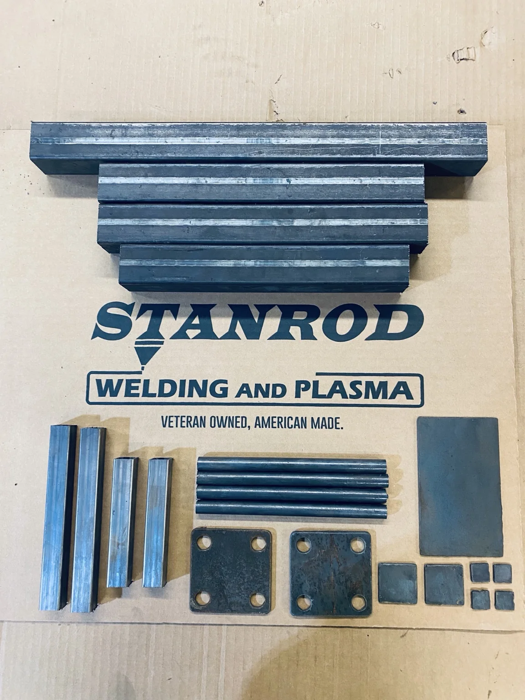

Learn the skill. Practice the work. Prove what you can do.
FabChallenge gives people a path from “I want to get better” to “I can prove I can do this.” The challenge matters, but so does helping people build the skill to meet it.
Built to help people improve before they are graded
The video lessons explain the work, the drawings establish the standard, and the practice kits give fabricators room to make mistakes, learn from them, and try again.
When someone is ready, the graded kit gives them a clear way to put that skill to the test.
A simple path from learning to assessment
FabChallenge is designed so someone can start where they are today and work toward a measurable result.
Learn
Use the video lessons to understand the fabrication process, fit-up, finishing expectations, and common mistakes.
Practice
Use practice kits to repeat the work without the pressure of a formal score.
Build the graded piece
When you are ready, complete the challenge using the supplied drawing, tolerances, and requirements.
Get a real result
The finished work is evaluated against a defined rubric so you know where you stand and where you can improve.
Choose the amount of practice that makes sense for you
The exact kit names, photos, prices, and Etsy links will be plugged into the live version once we finish the page structure.
Build confidence first
Use the same basic project format for repetition, skill development, and learning before you submit graded work.
Put your work to the test
Complete the formal challenge and submit the finished project for scoring against the FabChallenge standard.
Practice, then grade
A practical option for people who want repetition before moving into the formal assessment.
Use FabChallenge with a team
Multi-kit options can support employee development, internal assessment, classroom use, or repeatable shop training.
Clear expectations before the work is judged
The grading system can account for fit-up, dimensional accuracy, weld quality, finishing, presentation, and whether the completed assembly is safe, installable, powder-coat ready, and saleable.

Start where you are and work toward the standard
The finished site will link directly to your Etsy kit listings and the video lesson platform.